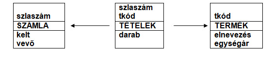

2.3.5. V. példa

9. ábra
Gyakori eset a relációs modellben, amikor az elméleti több:több viszonyt ún. kapcsolótáblával lehet megoldani. Jelenleg 1 számlán több termék és 1 termék több számlán is szerepelhet. Ezért a két törzstábla közé harmadik táblát kell létrehozni - egy későbbi fejezetben vezetjük le ennek technikáját -, és az lesz kapcsolatban a másik kettővel.
Nevezzük Tételeknek a kapcsolótáblát, melyben mindkét törzs - Termék, illetve Számla - kulcsa külső kulcsként fog szerepelni, esetünkben éppen kulcsszerepben. Ez azt jelenti, hogy egy számlán egy termék csak egyszer fordulhat elő.
Figyelem:
- a Számla:Tételek kapcsolat 1:N (1 számlán több termék lehet),
- a Termék:Tételek kapcsolat 1:N (1 termék több számlán fordulhat elő),
- a Számla:Termék között pedig nincs kap